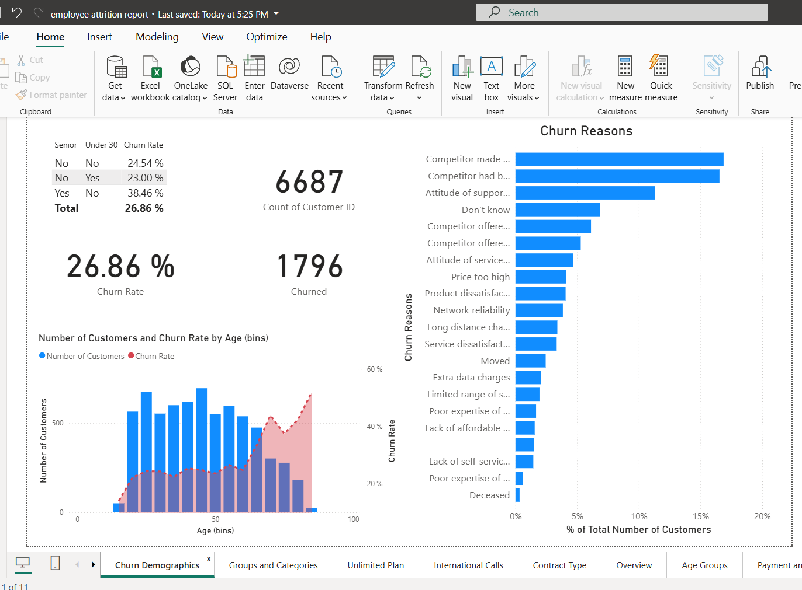
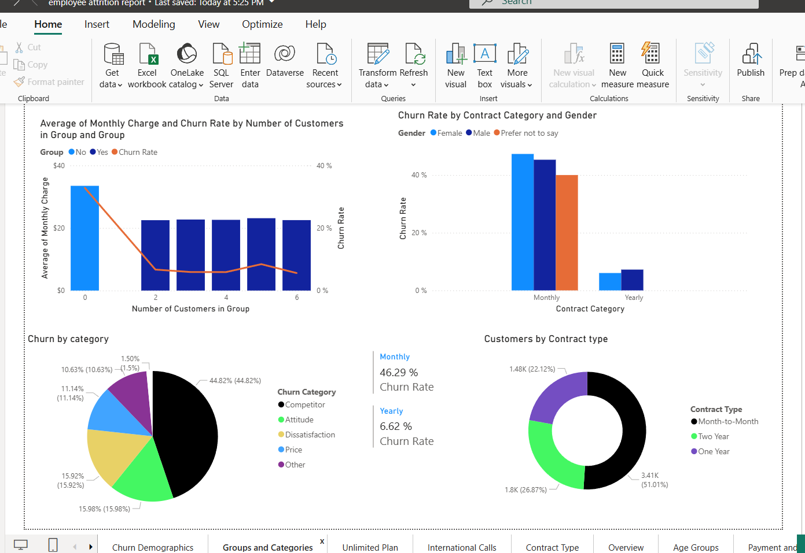
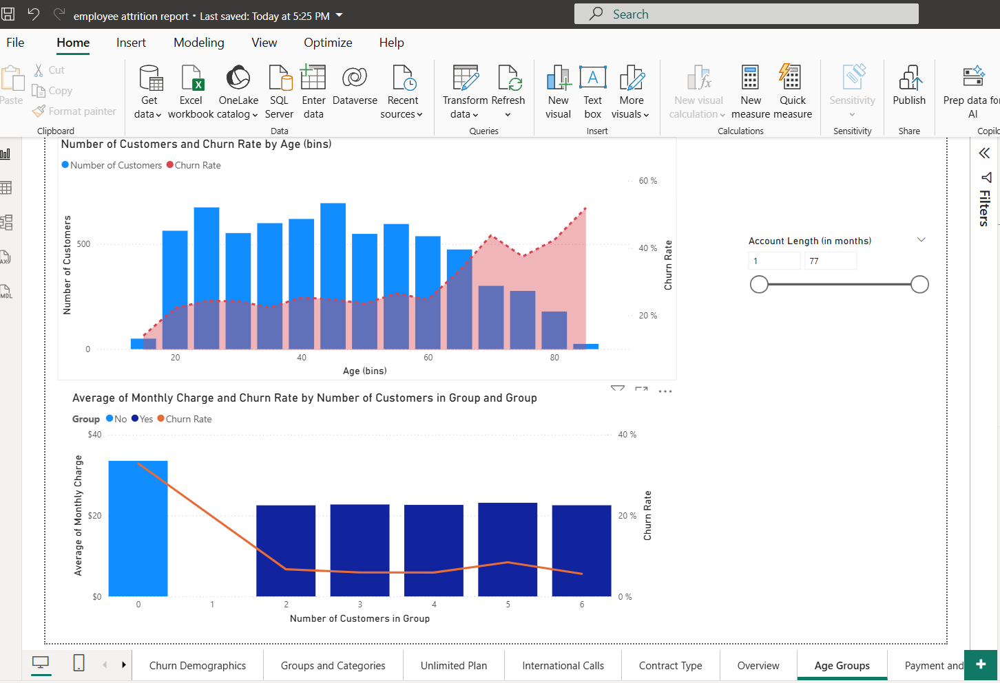
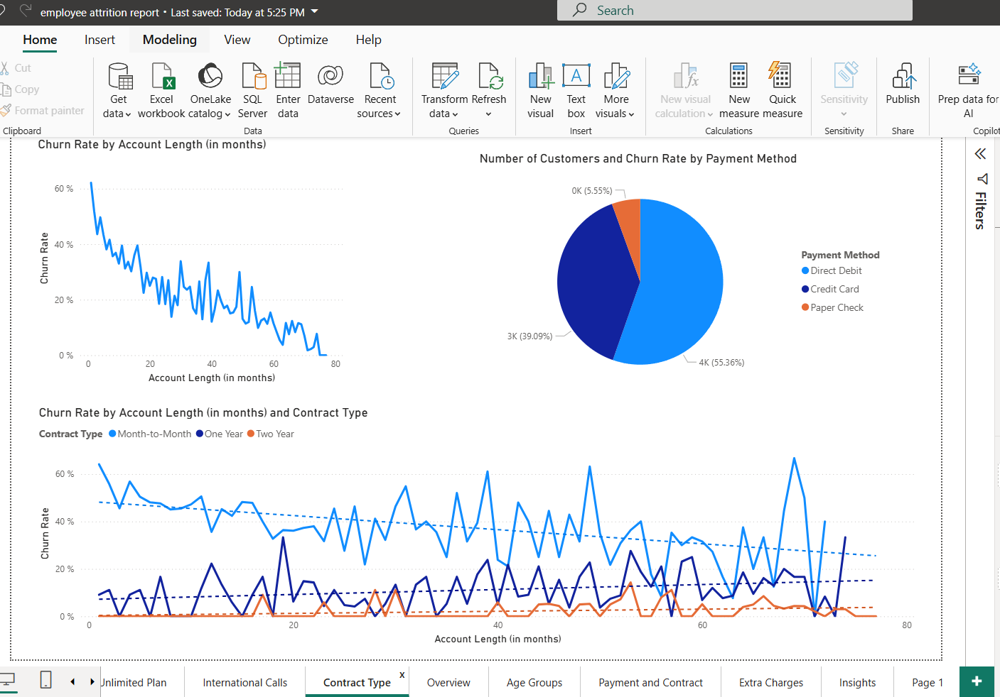

Attrition / Churn Analysis – Detailed Report
Executive Summary
This case study analyses churn/attrition patterns using Power BI to identify key drivers behind customers leaving
and to highlight areas where retention efforts should be focused.
The dashboard shows a churn rate of around 26.86%. The strongest churn signals appear around
contract type, customer groups, age segments, and
account length. Based on these findings, the recommendations focus on improving retention for
month-to-month customers, strengthening early-lifecycle engagement, and reducing churn caused by dissatisfaction and price sensitivity.
Note: The visuals in this report come from the Power BI pages/screenshots included below.
Objective
Understand churn patterns and identify the most important factors contributing to customers leaving,
so the business can prioritise retention actions.
Dataset
This analysis uses the dataset stored in this repository.
⬇ Download Dataset (CSV)
Power BI Report File
The full interactive Power BI report (all pages and visuals) is available for download below.
⬇ Download Power BI Report (.pbix)
Power BI Dashboards (All Pages)
Below are the key Power BI dashboard pages. Each page focuses on a different view of churn.
Dashboard 1: Overview

Dashboard 2: Churn Demographics

Dashboard 3: Groups and Categories

Dashboard 4: Age Groups

Dashboard 5: Contract Type / Payment / Account Length

Key Insights (What the dashboards show)
1) Overall churn level is significant
- The churn rate is approximately 26.86%.
- This means roughly 1 in 4 customers are leaving, which is a high business risk.
2) Contract type is a major churn driver
- Month-to-month customers show the highest churn.
- Yearly contracts show much lower churn, which indicates contract stability improves retention.
- This suggests churn can be reduced by moving more customers from monthly → longer plans.
3) “Competitor” and “dissatisfaction/price” dominate churn reasons
- Competitor-related reasons are the top contributors, meaning customers are switching providers.
- Price and dissatisfaction also appear repeatedly, suggesting value perception issues.
4) Age segments show different churn behaviour
- Churn patterns vary by age group, which means one retention strategy will not fit everyone.
- Targeted retention campaigns by age segment (offers, messaging, service improvements) will be more effective.
5) Account length matters (early-stage churn is a key risk)
- Churn trends change across account length.
- This is a signal that early customer experience (first months) is critical.
Recommendations (Actionable and business-focused)
- Reduce month-to-month churn: offer incentives to move monthly customers to 12–24 month plans.
- Early retention program: create an onboarding/engagement flow for the first 1–3 months (check-ins, discounts, proactive support).
- Competitor defence strategy: identify customers with churn risk signals and offer targeted retention deals before they leave.
- Address price & dissatisfaction: review pricing tiers, improve service quality, and provide clearer value communication.
- Segment-based campaigns: tailor messaging and offers by age group and customer category.
Skills Demonstrated
- Power BI dashboard creation (multi-page reporting)
- Data analysis and interpretation of churn metrics
- Insight generation and business recommendations
- Data storytelling and report presentation
- Repository documentation for recruiters (GitHub Pages)